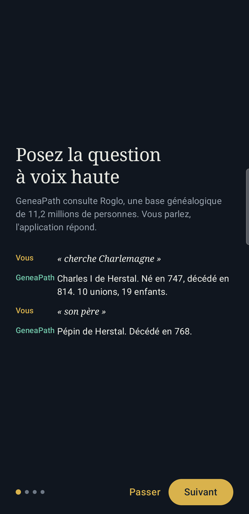
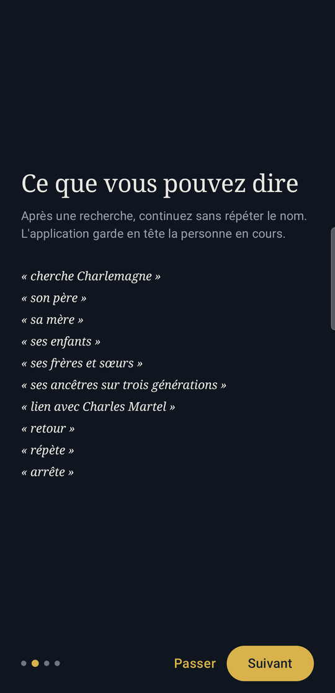
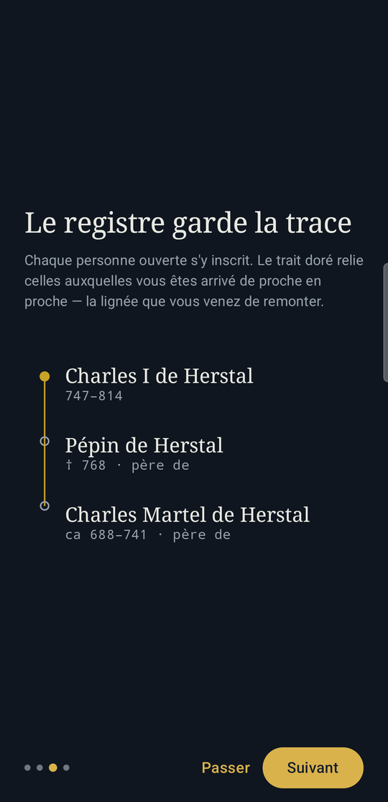
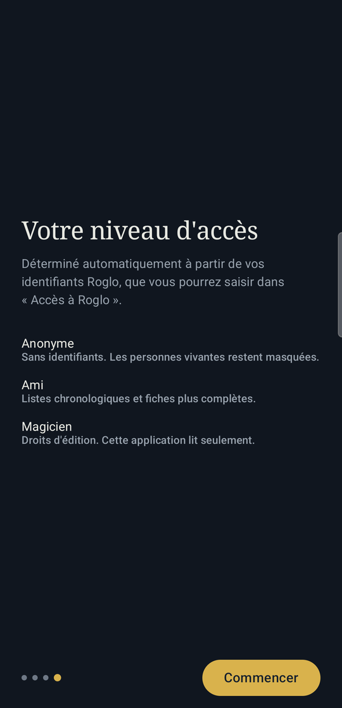
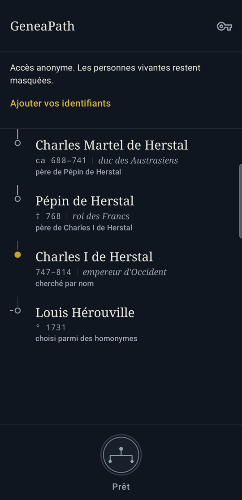
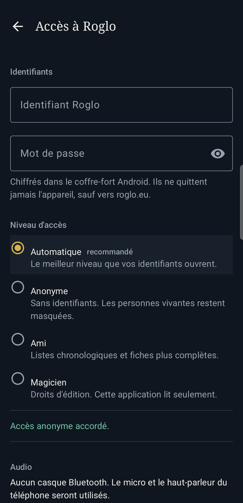

Test interne · version 0.2
Consultez Roglo — 11,2 millions de personnes — en parlant. Vous posez la question à voix haute, l’application vous répond, et chaque personne ouverte s’inscrit dans un registre que vous pouvez relire ensuite.
Roglo est une base généalogique considérable, mais elle se consulte à l’écran, un formulaire à la fois. GeneaPath en fait une conversation : vous demandez quelqu’un, puis vous continuez — « son père », « ses enfants » — sans jamais répéter le nom. L’application garde en tête la personne en cours.
N’importe quel casque Bluetooth convient. Les lunettes Ray-Ban Meta en sont un : l’application s’en sert comme micro et haut-parleur, rien de plus. Aucune application Meta n’est nécessaire.
| Vous dites | GeneaPath répond |
|---|---|
| « cherche Charlemagne » | Charles I de Herstal. Né en 747, décédé en 814. Enfant de Pépin I et Berthe au Grand pied de Laon. 10 unions, 19 enfants. |
| « son père » | Pépin de Herstal. Décédé en 768. Enfant de Charles Martel de Herstal et Rotrude de Hesbaye. |
| « ses ancêtres sur trois générations » | Génération 2 : Charles Martel de Herstal, Rotrude de Hesbaye… |
| « lien avec Charles Martel » | 61 personnes portent ce nom. Je les affiche à l’écran : touchez la bonne. |
Quatre écrans expliquent le principe. Ils ne reviennent pas ensuite.






Appuyez sur une ligne pour rouvrir la personne et l’entendre à nouveau. Appuyez deux fois pour ouvrir sa fiche Roglo dans votre navigateur — c’est le lien permanent, celui qui reste valable dans le temps.
L’anglais fonctionne aussi, et les accents sont facultatifs : la reconnaissance vocale les perd souvent, l’application ne s’en formalise pas.
Ouvrez ce lien avec le compte Google dont vous avez communiqué l’adresse, acceptez de devenir testeur, puis installez GeneaPath depuis Google Play :
https://play.google.com/store/apps/details?id=geneapath.probos.fr
L’application n’apparaît que pour les adresses inscrites, et le lien peut mettre quelques minutes à devenir actif après votre inscription.
Le calcul de parenté peut être long. Roglo remonte les deux ascendances jusqu’à un ancêtre commun ; entre deux personnes éloignées, cela dépasse parfois la minute. L’application vous le dit plutôt que de rester muette.
La reconnaissance des noms propres est le point faible. C’est précisément ce que ce test doit mesurer. Si un nom n’est jamais reconnu, notez-le : c’est l’information la plus utile que vous puissiez remonter.
L’application mesure son propre fonctionnement — combien de questions aboutissent, combien de temps Roglo met à répondre, ce qui plante — parce qu’une interface vocale échoue en silence : quand un nom est mal entendu, rien ne se casse, la réponse est simplement « personne de ce nom ». Sans ces compteurs, ce test ne remonterait que ce que vous pensez à signaler.
Ni vos paroles, ni les noms cherchés, ni les personnes ouvertes, ni vos identifiants ne sont transmis. Ce qui part, ce sont des nombres et des durées. Tout est effacé au bout de 30 jours, et l’interrupteur est dans Accès à Roglo.
Données et vie privée — le détail, évènement par évènement